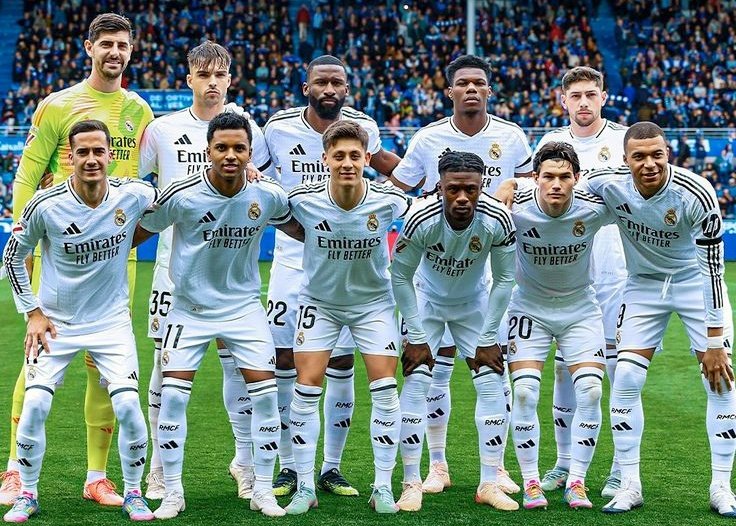
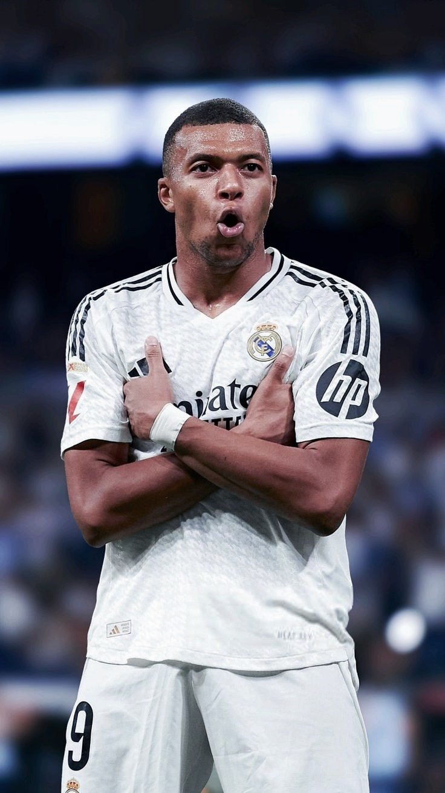
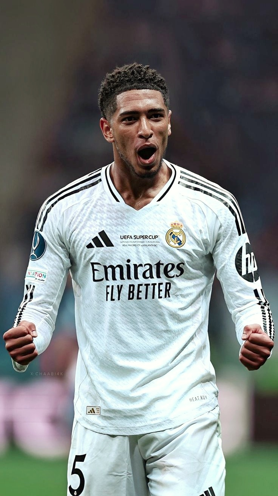
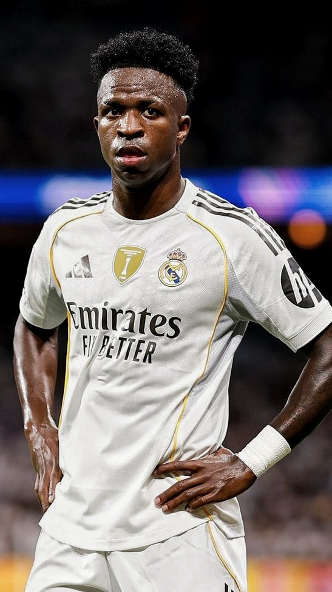
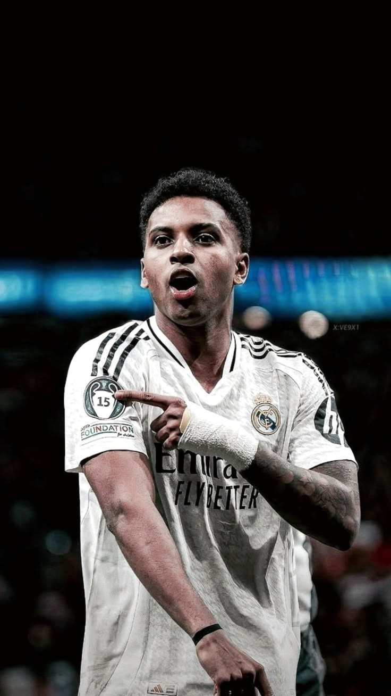

Real Madrid CF

Real Madrid CF is one of the most iconic and successful football clubs in the world, known for its rich history, legendary players, and unmatched achievements. Founded in 1902, the club has built a global fanbase and continues to dominate European football with its passion, excellence, and winning mentality.
The current squad of Real Madrid CF features a perfect blend of experienced leaders and young talents. With stars like Kylian mbappe , Jude Bellingham, Vinícius Júnior, Rodrygo, and valverde the team continues to compete at the highest level under world-class management.





| Competition | Titles |
|---|---|
| Champions League | 15 |
| La Liga | 35 |
| Copa del Rey | 20 |
| Supercopa | 13 |
CRISTIANO RONALDO represents one of the most iconic and unforgettable eras in the history of Real Madrid CF. After joining the club in 2009, he quickly became the face of a new generation, transforming into a global symbol of excellence at the legendary Santiago Bernabéu Stadium. With his incredible goal-scoring ability, unmatched athleticism, and relentless consistency, he shattered records and became the club’s all-time leading scorer. Every time he stepped onto the pitch, he carried the expectations of millions, yet continued to deliver performances that redefined greatness and inspired fans around the world. His legacy was built on the biggest stage in football—the UEFA Champions League—where he played a crucial role in Real Madrid’s dominance. Cristiano led the team to multiple Champions League titles, including the historic achievement of winning three consecutive trophies, a moment that cemented the club’s place at the top of European football. His ability to perform under pressure, score decisive goals, and lead by example made him the driving force behind some of the most memorable nights in the club’s history, creating moments that fans will never forget. Beyond goals and trophies, Cristiano Ronaldo embodied the true spirit of Real Madrid CF—discipline, ambition, and an unbreakable winning mentality. His dedication and work ethic set new standards for professionalism, inspiring teammates and future generations alike. Even after his departure, his influence continues to live on in the hearts of fans, reminding the world of an era defined by passion, dominance, and greatness. His legacy is eternal, not just as a player, but as a symbol of what it truly means to wear the white jersey.
Explore unforgettable moments from the journey of Real Madrid CF—from historic victories to legendary players and iconic celebrations. This gallery captures the spirit and pride of the club.